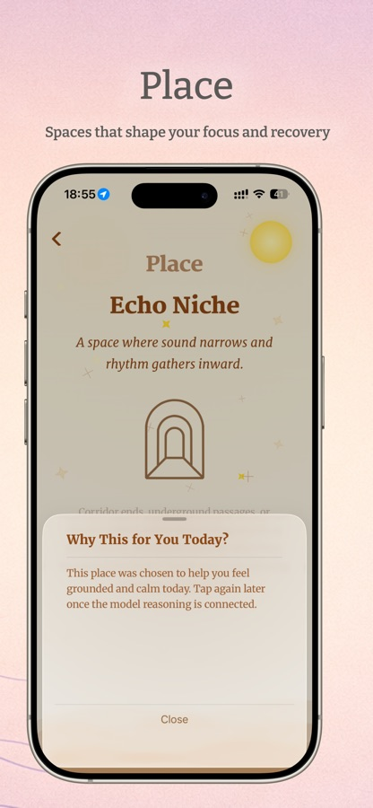
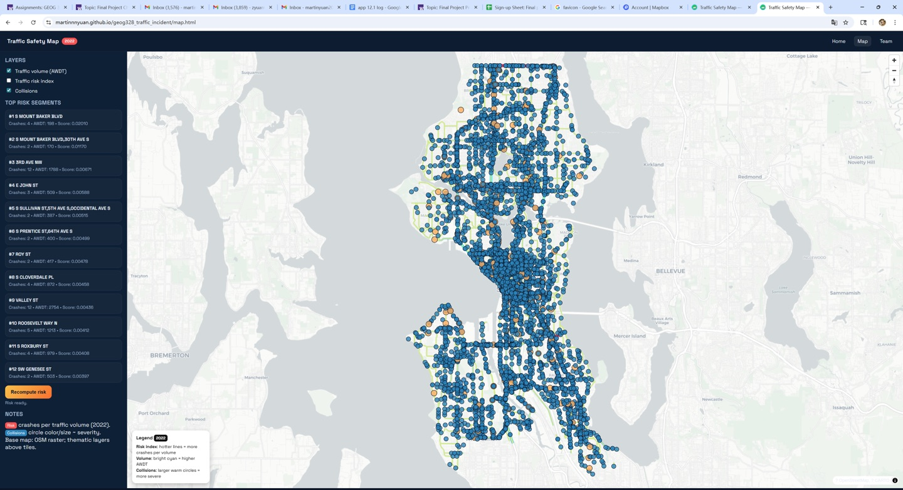

Transportation & mobility
Walking, transit access, and the environmental and temporal conditions that shape everyday journeys, travel experience, and equitable access.
GEOGRAPHY · DATA · HUMAN EXPERIENCE
Hello, I’m Zhaorun (Martin) Yuan.
I explore how the places we inhabit and the journeys we make shape everyday life—and how thoughtful technology can help us understand them.
Currently in Hong Kong / Previously in Seattle
I’m a geospatial data science master’s student at the University of Hong Kong, with a background in Geography and Data Science from the University of Washington.
My work brings spatial analysis and software development into conversation with humanistic geography. I’m drawn to questions about mobility, environmental exposure, and the ways people experience and make meaning of place.
From building an app to mapping urban accessibility, I enjoy turning geographic questions into tools people can explore and use.
A few steps along the wayI’m interested in how everyday environments, daily rhythms, and individual needs shape mobility—and how geospatial methods can make those experiences more visible.
Walking, transit access, and the environmental and temporal conditions that shape everyday journeys, travel experience, and equitable access.
Connecting spatial data with perception, emotion, agency, and place meaning to understand the lived experience behind a mapped location.
Using GIS, interpretable machine learning, and environmental data to study exposure and spatial inequality, with attention to uncertainty.
Building mobile applications, databases, and interactive maps that translate geographic ideas into thoughtful, usable experiences.
A direction I’m developing · Mindful mobility: exploring whether route recommendations that account for environmental conditions and activity transitions can support more comfortable daily journeys.
A selection of applications, maps, and analyses at the intersection of people, place, and data.
FEATURED PROJECT / HUMANISTIC GIS
A mindfulness app exploring connections between daily rhythm, spatial perception, and personal reflection. Developed through humanistic GIS research in Professor Bo Zhao’s lab at the University of Washington.
I developed the SwiftUI front end and Firebase database, and helped lead App Store submission, review, and subsequent improvements.



Connecting 2022 collision records and traffic volumes to explore crash patterns, volume-adjusted risk, and road safety.
Explore the projectAn interactive analysis of neighborhood transit-stop density and spatial disparities in public transportation accessibility.
Integrated King County and Seattle open data with neighborhood navigation, spatial queries, and dynamic charts. The accessibility index measures in-service stop density; it is a proxy for access rather than a network-based walking-time measure.
A proposed GeoAI framework bringing LLMs, map-making, and the Segment Anything Model into the study of Washington’s food deserts.
Developed for GEOG 495, the project considered evaluation strategies alongside the ethical and political limits of using GeoAI to represent unequal food access.
Examining the uneven spatial relationship between wildfire and forest-area change in Washington State from 2000 to 2020.
Used Washington State Department of Natural Resources data and spatial analysis in QGIS to map patterns of environmental and ecological change for GEOG 360.
Exploring climate change and US hurricane disaster costs through NCEI data, a structured database, and visual analysis in R.
Using SQL to analyze a Spotify database and develop recommendations for user personalization and advertising strategies.
Geography gives me the questions.
Data and computing help me explore them.
M.S. in Geospatial Data Science
Expected August 2027
B.A. in Geography: Data Science
Annual Dean’s List · 2023–2024 & 2024–2025
Investigating whether neighborhood and building characteristics improve indoor PM₂.₅ predictions in unseen homes, supervised by Prof. Junshi Xu at HKU.
Research and Alynna app development in Prof. Bo Zhao’s lab at the University of Washington.
THERE’S ALWAYS ANOTHER CONNECTION TO MAKE.
For conversations about geography, mobility,
humanistic GIS, or building something thoughtful.